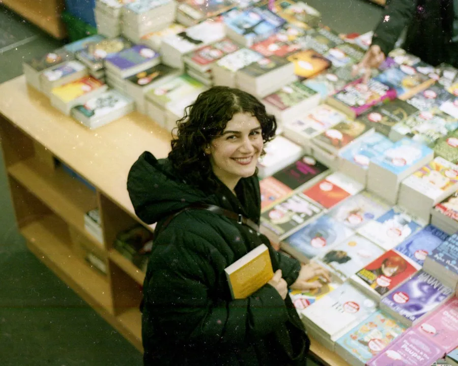
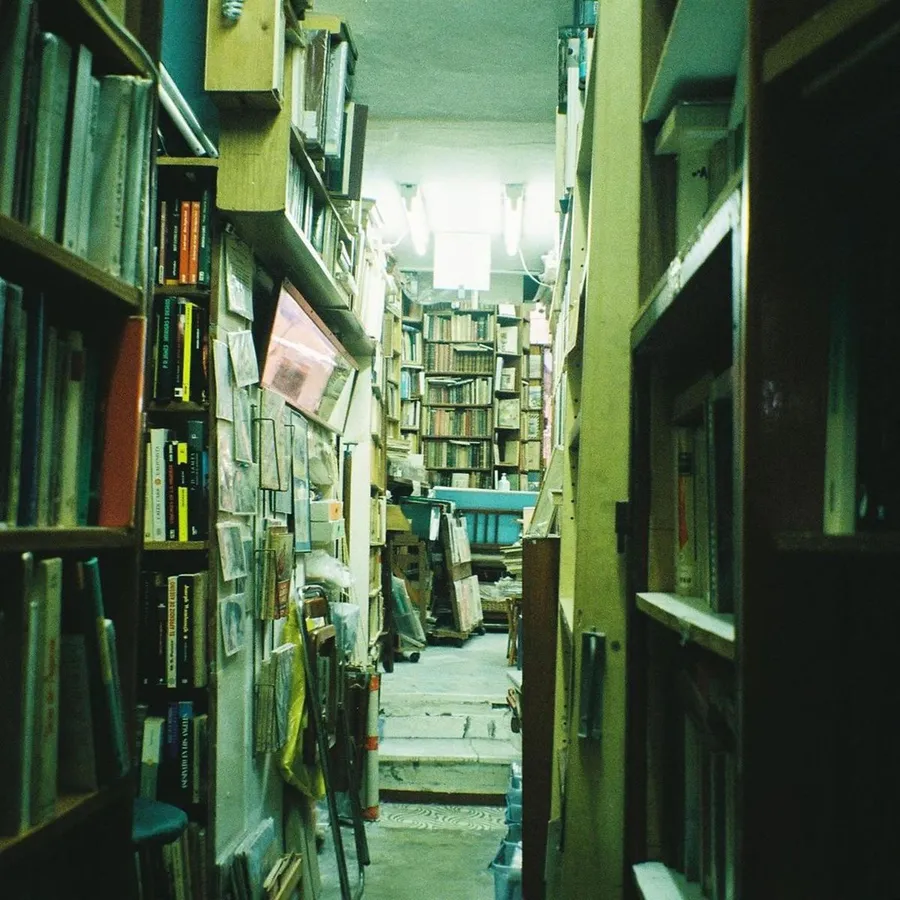

Independent since 1998 · Canongate, Edinburgh
A shop for people who love a good page.
Twelve thousand books, a very good kettle and booksellers who’ll talk you out of the wrong one. Browse the shelves here, then reserve for click and collect.


- Free collection in store
- Next-day ordering
- Gift wrapping, always
Bookseller’s pick
“A space opera that is really about home.”
Hand-picked
On our front table
 A Field Guide to Small JoysMara Lindqvist
A Field Guide to Small JoysMara LindqvistNon-fiction
A Field Guide to Small Joys
£14.99
 After the OrbitNgozi Adeyemi-ClarkeOnly 6 left
After the OrbitNgozi Adeyemi-ClarkeOnly 6 leftSci-fi & fantasy
After the Orbit
£10.99
 Night Shift at the LighthouseTomasz Brandt
Night Shift at the LighthouseTomasz BrandtCrime
Night Shift at the Lighthouse
£8.99
 The Salt CartographerImogen Fairweather
The Salt CartographerImogen FairweatherFiction
The Salt Cartographer
£9.99


Upcoming
Come and join us
- Oct22Reserve a seat
Author talk
An evening with Imogen Fairweather
19:00 · £5
- Oct29Reserve a seat
Book club
Crime Book Club: Night Shift at the Lighthouse
18:30 · Free
- Nov7Reserve a seat
Kids
Badger’s Story Time
10:30 · £3
The Pagebound letter
One email a month. Only good books.
New arrivals, event dates and one book we cannot stop recommending.